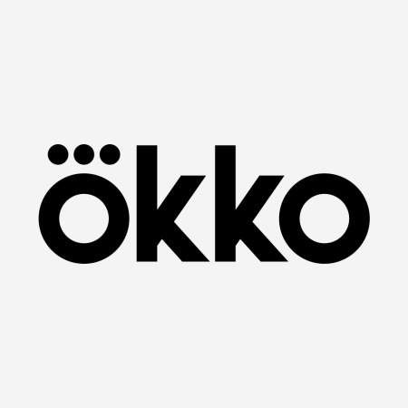

ivi
российская медиакомпания, работающая на рынке легального профессионального онлайн-видео. Среди проектов компании популярный в России[источник не указан 1295 дней] бесплатный онлайн-кинотеатр ivi.ru, бесплатный сервис персональных музыкальных каналов онлайн music.ivi.ru, а также первый в России детский видеосервис deti.ivi.ru.
Значительная часть контента всех проектов доступна для просмотра бесплатно и без регистрации.[2] Оставшуюся долю составляет премиальный контент сервиса ivi+: платная эротика и контент категории «суперпремьеры» (не только новинки, в премиальном контенте есть ленты 2000-х годов). Основной источник монетизации — реклама, может демонстрироваться перед фильмом, во время фильма или после него.Также доступна подписка по цене примерно 400 рублей в месяц.
Просмотр возможен как через сайты проектов ivi.ru/music.ivi.ru/deti.ivi.ru, так и через приложения сервисов для всех популярных мобильных платформ и платформ Smart TV.
ivi подписала контракты на демонстрацию контента от ведущих российских и зарубежных правообладателей, таких как Warner Brothers/Warner Music, Paramount Pictures, 20th Century Fox, Sony Pictures/Sony Music, NBC Universal/Universal Music, Disney, BBC, National Geographic, Мосфильм, Ленфильм, СТВ, Централ Партнершип, Парадиз, Star Media, Film.UA, СТС-медиа, киностудия им. Горького и многими другими
okko
сайт-кинотеатр, где вы можете в любое время абсолютно бесплатно и в отличном качестве смотреть новинки кино и сериалов, хиты отечественного и мирового кинематографа, сериалы и шоу ТНТ, а также любимые мультфильмы.
Приложение NOW.RU можно скачать в свой смартфон и планшет – доступно в AppStore, GooglePlay и Windows Mobile. Также приложение NOW.RU доступно на Smart TV ведущих производителей телевизоров – Phillips, Samsung, LG, Sony и Panasonic.

Amediateka
дна из крупнейших кинокомпаний в России, производящих телесериалы, телефильмы и телепрограммы.
«Амедиа» основана в 2002 году российским продюсером Александром Акоповым. Ежегодно компания производит около двухсот пятидесяти часов контента различных жанров — драмы, детективы и триллеры, романтические комедии и ситкомы. В распоряжении «Амедиа» имеется собственный студийный комплекс полного цикла в центре Москвы общей площадью более 40 000 м² с шестнадцатью съёмочными павильонами[1].
Компания впервые в стране организовала совместное производство с крупными голливудскими студиями.
Всего в библиотеке компании около трёх тысяч часов контента и почти семьдесят проектов, самые известные из которых — теленовелла «Бедная Настя», российский ситком «Моя прекрасная няня», теленовеллы «Не родись красивой» и «Татьянин день», мистический триллер «Закрытая школа» и другие.
Параллельно с работой над сериалами, фильмами и программами, в «Амедиа» ведётся поиск и подготовка новых творческих кадров. В проектах «Амедиа» начинали свой путь к массовому зрителю такие российские актёры, как Елена Корикова, Анастасия Заворотнюк, Нелли Уварова, Анна Снаткина, Кирилл Сафонов, Даниил Страхов, Павел Прилучный.
В «Амедиа» прошли два выпуска актёрской школы (совместно со Школой-студией МХАТ), три выпуска продюсерской школы (совместно со ВГИК имени С. А. Герасимова), семинары с американскими авторами, режиссёрами и продюсерами.
В компании регулярно проводятся конкурсы для сценаристов и авторов «Лаборатория идей», а также «Актёрская лаборатория», в которой принимают участие молодые актёры.
«Амедиа» стала первым российским членом Гильдии сценаристов Америки (Writers Guild of America) — профессионального союза писателей, работающих в кино, на телевидении, в рекламе и театре. В союзе состоят крупнейшие европейские и американские кинопроизводители